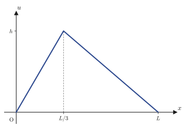
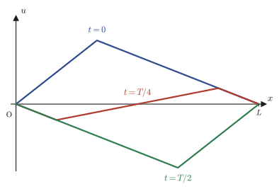
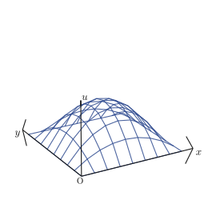
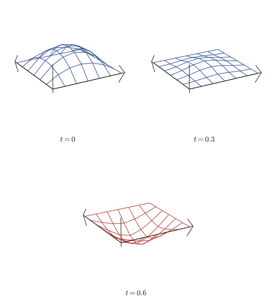
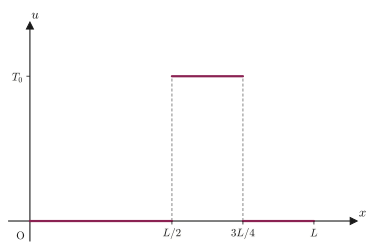
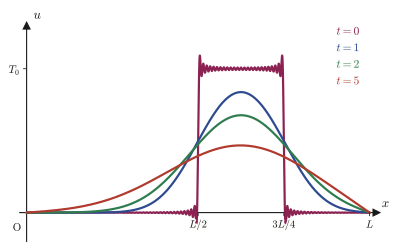
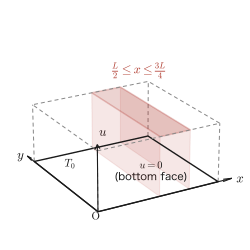
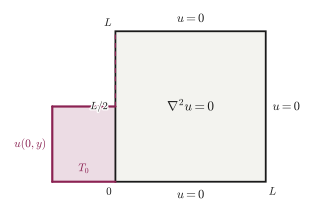

Chapter 43The Wave Equation and the Heat Equation — Derivation and Separation of Variables
In Chapter 42 we studied the general theory of partial differential equations and how to solve Lagrange's first-order partial differential equation. From this chapter on, we finally take up the concrete partial differential equations that describe nature itself—the wave equation and the heat equation. Both are “second-order linear partial differential equations” in which the unknown function is partially differentiated twice and once, respectively, and with just a single equation they describe everything from the vibration of a string, the membrane of a drum, and the temperature distribution in a metal rod to the propagation of electromagnetic waves. This chapter has two goals. (1) To follow, without skipping a single line of algebra, how these equations are actually derived from physical laws (Maxwell's equations, the equation of motion, and Fourier's law of heat conduction). (2) To master the most powerful tool for actually solving the derived equations under boundary conditions and initial conditions—the method of separation of variables.
The idea of separation of variables is simple and clear. It says: “Let us look for the function $u(x,t)$, which depends on both $x$ and $t$, only in the special form $u=X(x)T(t)$, the product of a function $X(x)$ of $x$ alone and a function $T(t)$ of $t$ alone.” You may wonder why we are allowed to restrict ourselves to such a special form. The reason is that the equation is linear, so any “infinite linear combination” formed by adding up arbitrarily many of the special-form solutions we have found is again a solution (the principle of superposition). And if we determine the coefficients of an infinite linear combination of the special-form solutions (eigenfunctions) that satisfy the boundary conditions by means of the Fourier series expansion (Chapters 28 and 29), we obtain a general solution that can accommodate any initial condition. This three-step flow, “separation of variables → eigenvalue problem → determination of the Fourier coefficients,” is used repeatedly in the four examples of this chapter (the one- and two-dimensional wave equations and heat equations), and exactly the same skeleton is used again for the Schrödinger equation from Chapter 45 on. In a sense, this chapter also previews the mathematical foundations of quantum mechanics.
- Derive, from Maxwell's equations in vacuum, the wave equation $\nabla^2\bm E=\dfrac{1}{c^2}\pdiff{^2\bm E}{t^2}$ satisfied by the electric field (using the vector identity $\nabla\times(\nabla\times\bm E)=-\nabla^2\bm E+\nabla(\nabla\cdot\bm E)$)
- (Extra) Substitute $u=\psi(x)\cos(\omega t+\theta_0)$ into the wave equation to derive the time-independent Schrödinger equation—a bridge to Chapter 45
- Derive the one-dimensional wave equation $\pdiff{^2u}{x^2}=\dfrac1{v^2}\pdiff{^2u}{t^2}$ ($v^2=T/\rho$) from the equation of motion $ma=F$ for a small element of a string
- Derive the heat equation $\pdiff ut=a\pdiff{^2u}{x^2}$ ($a=k/(\rho C)$) from the heat balance for a small interval of a rod and Fourier's law of heat conduction
- The three-step solution pattern: the method of separation of variables $u=X(x)T(t)$, the principle of superposition, and determination of the Fourier coefficients by the Fourier sine series
- Solve the one- and two-dimensional wave equations and the one- and two-dimensional heat equations completely as concrete boundary value problems (both ends fixed, initial conditions with triangular or rectangular distributions, and so on)
- Compare the solution of the wave equation (which keeps oscillating) with that of the heat equation (which decays exponentially), starting from the same initial condition, to see the qualitative difference
- The boundary value problem for the two-dimensional Laplace's equation $\pdiff{^2u}{x^2}+\pdiff{^2u}{y^2}=0$ (the calculation that breaks off in the original notes is completed in this chapter)
Source notes: Yasuhide Mochizuki, Mathematics Notes: Partial Differential Equations, pp. 11–22.
43.1 Derivation of the Wave Equation (from Maxwell's Equations)
43.1.1 Maxwell's equations in vacuum and the wave equation for the electric field
All phenomena of electricity and magnetism are summarized in the four equations known as Maxwell's equations. Let us write $\bm E$ for the electric field, $\bm D$ for the electric flux density (in many materials $\bm D=\varepsilon\bm E$, where $\varepsilon$ is the permittivity), $\bm B$ for the magnetic flux density, $\bm H$ for the magnetic field strength (in many materials $\bm B=\mu\bm H$, where $\mu$ is the permeability), $\rho$ for the charge density, and $\bm j$ for the current density. Then the four equations are as follows.
$$ \nabla\cdot\bm D=\rho, \qquad \nabla\cdot\bm B=0, \qquad \nabla\times\bm E=-\pdiff{\bm B}{t}, \qquad \nabla\times\bm H=\bm j+\pdiff{\bm D}{t} $$We studied the definitions of $\nabla\cdot(\cdot)$ (divergence) and $\nabla\times(\cdot)$ (curl, also called rotation) in Chapter 19. Let us confirm the physical meaning of each equation in a few words. The first equation (Gauss's law) says that “electric field lines emanate from wherever there is charge.” The second says that “magnetic field lines have no source points (that is, there are no isolated magnetic poles, or monopoles).” The third (Faraday's law of electromagnetic induction) says that “when the magnetic flux density changes with time, an electric field arises that swirls around it like a vortex.” The fourth (the Ampère–Maxwell law) says that “a current, or a change of the electric flux density with time (the displacement current), creates a swirl of magnetic field around it.”
In this section we consider empty space, that is, vacuum (a region in which there are neither charges nor currents). In other words, we set $\rho=0$ and $\bm j=0$. In vacuum the proportional relations $\bm D=\varepsilon_0\bm E$ and $\bm B=\mu_0\bm H$ ($\varepsilon_0$: the permittivity of vacuum; $\mu_0$: the permeability of vacuum), called the constitutive equations, hold, so the four equations can be rewritten as follows.
$$ \nabla\cdot\bm E=0, \qquad \nabla\cdot\bm B=0, \qquad \nabla\times\bm E=-\pdiff{\bm B}{t}, \qquad \nabla\times\bm H=\pdiff{\bm D}{t} $$Our goal is to eliminate $\bm H$ (and $\bm B$) from these four simultaneous equations and to derive an equation satisfied by the electric field $\bm E$ alone. The key is the following vector identity, which holds for any vector field $\bm E$ (it follows from the properties of divergence and curl in Chapter 19; for the proof, see the exercises of Chapter 19 or the appendix).
\begin{equation} \nabla\times(\nabla\times\bm E)=-\nabla^2\bm E+\nabla(\nabla\cdot\bm E) \label{eq:43-vecid} \end{equation}Here $\nabla^2$ is the Laplacian ($\nabla^2 f=\pdiff{^2f}{x^2}+\pdiff{^2f}{y^2}+\pdiff{^2f}{z^2}$; on a vector field it acts on each component), and $\nabla(\nabla\cdot\bm E)$ is the gradient of “the divergence of $\bm E$ (a scalar quantity).”
Derivation: The wave equation for the electric field
In vacuum we have $\nabla\cdot\bm E=0$, so the second term on the right-hand side of the identity in Eq. \eqref{eq:43-vecid} vanishes, leaving
\begin{equation} \nabla\times(\nabla\times\bm E)=-\nabla^2\bm E \label{eq:43-step1} \end{equation}On the other hand, for $\nabla\times\bm E$ on the left-hand side we can use the third equation (Faraday's law): $\nabla\times\bm E=-\pdiff{\bm B}t=-\mu_0\pdiff{\bm H}t$ (we substituted $\bm B=\mu_0\bm H$). Therefore the left-hand side can be rewritten as
$$ \nabla\times(\nabla\times\bm E)=\nabla\times\left(-\mu_0\pdiff{\bm H}{t}\right) $$Here, $\mu_0$ is a constant, so it can be taken outside $\nabla\times$ (a derivative with respect to space); moreover, the spatial derivative $\nabla\times$ and the time derivative $\pdiff{}{t}$ are derivatives with respect to independent variables, so their order can be interchanged (this is the same idea as the “interchange of the order of partial differentiation” learned in high school, and it is a property we studied in Chapter 6). Hence
$$ \nabla\times\left(-\mu_0\pdiff{\bm H}{t}\right)=-\mu_0\pdiff{}{t}(\nabla\times\bm H) $$Into this we substitute the fourth equation $\nabla\times\bm H=\pdiff{\bm D}t=\varepsilon_0\pdiff{\bm E}t$ (here the constitutive equation $\bm D=\varepsilon_0\bm E$ for vacuum has been used), and obtain
$$ -\mu_0\pdiff{}{t}(\nabla\times\bm H)=-\mu_0\pdiff{}{t}\left(\varepsilon_0\pdiff{\bm E}t\right)=-\varepsilon_0\mu_0\pdiff{^2\bm E}{t^2} $$Summarizing the above, we have found that the left-hand side of Eq. \eqref{eq:43-step1} is equal to $-\varepsilon_0\mu_0\pdiff{^2\bm E}{t^2}$, so
$$ -\nabla^2\bm E=-\varepsilon_0\mu_0\pdiff{^2\bm E}{t^2} $$Multiplying both sides by $-1$ and rearranging, we obtain
$$ \nabla^2\bm E=\varepsilon_0\mu_0\pdiff{^2\bm E}{t^2} $$Lastly, we use the fact that the speed of light $c$ in vacuum is expressed in terms of $\varepsilon_0,\mu_0$ as $c=1/\sqrt{\varepsilon_0\mu_0}$, that is, $\varepsilon_0\mu_0=1/c^2$ (this is the definition of $c$ in electromagnetism; substituting $\varepsilon_0=8.854\times10^{-12}\,\mathrm{F/m}$ and $\mu_0=4\pi\times10^{-7}\,\mathrm{H/m}$, one can confirm that indeed $c\approx2.998\times10^8\,\mathrm{m/s}$). We thus finally obtain
\begin{equation} \nabla^2\bm E=\frac1{c^2}\pdiff{^2\bm E}{t^2} \label{eq:43-wave-E} \end{equation}∎
Formula 43.1: The wave equation for electromagnetic waves
In vacuum, the electric field $\bm E$ satisfies the wave equation in Eq. \eqref{eq:43-wave-E}. If we carry out the same argument for $\bm H$ (it suffices to start from the third equation instead of the fourth), we obtain exactly the same form $\nabla^2\bm H=\dfrac1{c^2}\pdiff{^2\bm H}{t^2}$. That is, both the electric field and the magnetic field behave as a wave—an electromagnetic wave—traveling through vacuum at the speed of light $c$. That Maxwell arrived at this result in the 1860s and recognized that light itself is an electromagnetic wave is one of the greatest discoveries in the history of physics.
43.1.2 Extra: Deriving the Schrödinger equation from the wave equation
Let us take a short digression here. Into the one-dimensional wave equation
$$ \pdiff{^2u}{x^2}=\frac1{v^2}\pdiff{^2u}{t^2} $$let us substitute a solution that is a simple harmonic oscillation in time, $u(x,t)=\psi(x)\cos(\omega t+\theta_0)$ ($\theta_0$ is the initial phase). Since the partial derivative with respect to $x$ does not affect $\cos(\omega t+\theta_0)$, we have $\pdiff{^2u}{x^2}=\dfrac{d^2\psi}{dx^2}\cos(\omega t+\theta_0)$; and differentiating twice with respect to $t$ differentiates the $\cos$ twice, which reverses the sign, so $\pdiff{^2u}{t^2}=-\omega^2\psi\cos(\omega t+\theta_0)$. Substituting these, the factor $\cos(\omega t+\theta_0)$ common to both sides can be divided out, and we obtain the following ordinary differential equation for $\psi(x)$ alone.
$$ \frac{d^2\psi}{dx^2}=-\frac{\omega^2}{v^2}\psi $$Here we use $\omega=2\pi\nu$ ($\nu$: the frequency) and $v=\nu\lambda$ (wave speed = frequency × wavelength, the basic relation for waves that is learned in high school physics). Then we obtain
$$ \left(\frac\omega v\right)^2=\left(\frac{2\pi\nu}{\nu\lambda}\right)^2=\frac{4\pi^2}{\lambda^2} $$(Since $\nu$ appears in both the numerator and the denominator, it can be canceled.) On the other hand, in quantum mechanics the de Broglie relation $p=h/\lambda$ ($h$: the Planck constant, $p$: the momentum) holds, which says that a particle (for example, an electron) also has the properties of a wave of wavelength $\lambda$. The total energy $E$ of the particle can be written as the sum of the kinetic energy and the potential energy $V$, $E=\dfrac{p^2}{2m}+V$ ($m$: the mass of the particle); solving this for $p$ gives $p=\sqrt{2m(E-V)}$, and from the de Broglie relation we obtain
$$ \lambda=\frac hp=\frac{h}{\sqrt{2m(E-V)}} $$Substituting this $\lambda$ into the expression for $(\omega/v)^2$ above, we get
$$ \therefore\ \frac{d^2\psi}{dx^2}=-\frac{4\pi^2}{h^2}\cdot2m(E-V)\,\psi $$($4\pi^2/\lambda^2$ was multiplied by the reciprocal $2m(E-V)/h^2$ of $\lambda^2=h^2/(2m(E-V))$.) Multiplying both sides by $-\dfrac{h^2}{8\pi^2m}$ and rearranging (the factor was chosen so that the coefficient on the left-hand side comes out to be exactly $1$), we obtain
\begin{equation} -\frac{h^2}{8\pi^2m}\pdiff{^2\psi}{x^2}+V\psi=E\psi \label{eq:43-schrodinger-h} \end{equation}This is the equation we arrive at.
Formula 43.2: The time-independent Schrödinger equation (in terms of the Planck constant $h$)
Assuming a simple harmonic solution of the wave equation and combining the de Broglie relation with the expression for the energy, we obtain Eq. \eqref{eq:43-schrodinger-h}. This is the fundamental equation of quantum mechanics itself, called the time-independent Schrödinger equation.
Why?: This derivation is not a “proof”
What we have done here is not a rigorous derivation of the Schrödinger equation but a check of plausibility: “if particles have wave properties, then assuming a simple harmonic solution of the classical wave equation and substituting the de Broglie relation produces an equation of the same form as the fundamental equation of quantum mechanics.” The actual fundamental equation of quantum mechanics is derived anew in Chapter 45 from a completely different way of thinking, namely operators (momentum and energy as differential operators). There, the form using the reduced Planck constant $\hbar=h/(2\pi)$, $-\dfrac{\hbar^2}{2m}\pdiff{^2\psi}{x^2}+V\psi=E\psi$, is used. If we verify that $\hbar^2/(2m)=h^2/(8\pi^2m)$ (from $\hbar=h/2\pi$ we get $\hbar^2=h^2/4\pi^2$, and dividing this by $2m$ gives $h^2/(8\pi^2m)$), we see that Eq. \eqref{eq:43-schrodinger-h} is exactly the same equation as the form in Chapter 45. The digression in this section also foreshadows the contents of Chapter 45.
Example 43.1: Condition for a plane wave to satisfy the wave equation, and the wavelengths of visible light and electrons
(a) Find the relation among $\omega,k,c$ that is necessary for $E(x,t)=E_0\cos(kx-\omega t)$ ($k=2\pi/\lambda$: the wavenumber) to satisfy the one-dimensional wave equation $\pdiff{^2E}{x^2}=\dfrac1{c^2}\pdiff{^2E}{t^2}$. (b) Find the wavelength of visible light of frequency $\nu=5.0\times10^{14}\,\mathrm{Hz}$. (c) Find the de Broglie wavelength of an electron with kinetic energy $100\,\mathrm{eV}$ (the electron mass is $m_e=9.109\times10^{-31}\,\mathrm{kg}$, $1\,\mathrm{eV}=1.602\times10^{-19}\,\mathrm J$, and the Planck constant is $h=6.626\times10^{-34}\,\mathrm{J\,s}$).
Solution. (a) Taking the second partial derivative with respect to $x$ gives $\pdiff{^2E}{x^2}=-k^2E_0\cos(kx-\omega t)=-k^2E$, and taking the second partial derivative with respect to $t$ gives $\pdiff{^2E}{t^2}=-\omega^2E_0\cos(kx-\omega t)=-\omega^2E$. Substituting these into the equation, we obtain
$$ -k^2E=\frac1{c^2}(-\omega^2E)\qquad\therefore\ k^2=\frac{\omega^2}{c^2} $$(we divided by $E\not\equiv0$). Since $k,\omega,c$ are all positive, taking square roots gives $\omega=ck$ as the condition. This is precisely the condition that the wave of Figure 43.1 travels with speed $c$, and $\omega=ck$ (angular frequency = propagation speed × wavenumber) is nothing other than the high school physics relation “wave speed = frequency × wavelength,” $c=\nu\lambda$, rewritten using $\omega=2\pi\nu$ and $k=2\pi/\lambda$.
(b) From $c=\nu\lambda$ we have $\lambda=c/\nu$. Using $c=2.998\times10^8\,\mathrm{m/s}$,
$$ \lambda=\frac{2.998\times10^8}{5.0\times10^{14}}=5.996\times10^{-7}\,\mathrm m\approx600\,\mathrm{nm} $$($1\,\mathrm{nm}=10^{-9}\,\mathrm m$). This agrees with the wavelength range of orange visible light.
(c) The kinetic energy is $E_k=\dfrac{p^2}{2m_e}$ (corresponding to $E-V$ in the case of potential $V=0$), so $p=\sqrt{2m_eE_k}$. First, converting to joules, $E_k=100\times1.602\times10^{-19}=1.602\times10^{-17}\,\mathrm J$. Hence
$$ p=\sqrt{2\times9.109\times10^{-31}\times1.602\times10^{-17}}=5.402\times10^{-24}\,\mathrm{kg\,m/s} $$From the de Broglie relation $\lambda=h/p$,
$$ \lambda=\frac{6.626\times10^{-34}}{5.402\times10^{-24}}=1.227\times10^{-10}\,\mathrm m\approx123\,\mathrm{pm} $$($1\,\mathrm{pm}=10^{-12}\,\mathrm m$). This is of the same order of magnitude as the size of an atom (on the order of an ångström, $100\,\mathrm{pm}$), and that is precisely why an electron inside an atom shows its character as a “wave”—quantized energy levels as standing waves—so prominently (we study this in detail from Chapter 45 onward). (Verified with SymPy and numpy: for (a), substituting $\omega=ck$ gives $0$ identically; for (b) and (c), numerical computation was confirmed to agree with the values above.)
43.2 Derivation of the One-Dimensional Wave Equation (Vibrating String)
In the previous section we derived the wave equation from electromagnetism, but an equation of the same form can also be derived from the vibration of a string, such as that of a guitar or violin. Here we can start from nothing but the equation of motion $F=ma$ of high school physics, so this is the example in which the meaning of the wave equation can be understood most concretely.
Consider a string fixed at two points, the origin $0$ and the point $(L,0)$. We assume that the string has a uniform linear density $\rho\,[\mathrm{kg/m}]$ (mass per unit length) and a uniform cross-sectional area (although the cross-sectional area does not appear directly in the one-dimensional approximate equation of motion that we are about to set up), and that the tension $T$ has the same value at every position along the string. When the string is plucked, each point of the string oscillates, being displaced only up and down (in the $u$ direction in the figure). Let us write $u(x,t)$ for the displacement at position $x$ at time $t$.
Math Note: On how to write $\pdiff{^2u}{t^2}$
Since $u$ is the function $u(x,t)$ of the two variables $x$ and $t$, the “acceleration” with respect to time is properly written not as $\dfrac{d^2u}{dt^2}$ but as the partial derivative with respect to time with $x$ held fixed, $\pdiff{^2u}{t^2}$. Similarly, the net force $F$ that we are about to find means the resultant of the forces in the direction in which each point of the string moves (the $u$-axis direction).
Let us take out a small piece of the string (the interval from $x$ to $x+\Delta x$) and examine the forces acting on it. The mass of this small piece is $m=\rho\cdot\Delta x$. From the equation of motion $ma=F$ (where $a$ is the acceleration in the $u$ direction, $\pdiff{^2u}{t^2}$), we have
\begin{equation} ma=\underbrace{(\rho\cdot\Delta x)}_{m}\cdot\underbrace{\pdiff{^2u}{t^2}}_{a} \label{eq:43-string-newton} \end{equation}Next, we find the net force $F$ on the right-hand side.
Derivation: Computing the net force $F$
At the left end of the string (position $x$), the string is subject to a tension $T$ directed down and to the left at angle $\theta$. At the right end (position $x+\Delta x$), the string is subject to a tension $T$ directed up and to the right at angle $\theta+\Delta\theta$. The $u$-direction (vertical) components of the left and right tensions are $-T\sin\theta$ (left end; negative because it points downward) and $+T\sin(\theta+\Delta\theta)$ (right end; positive because it points upward), respectively. Therefore the net force in the $u$ direction is
$$ F=T\sin(\theta+\Delta\theta)-T\sin\theta $$When $\Delta x$ is very small, the angles $\theta,\theta+\Delta\theta$ are also close to $0$, so using the approximation $\sin\theta\approx\tan\theta$ valid for $\theta\approx0$ (this follows from $\sin\theta=\tan\theta\cos\theta$ and the fact that $\cos\theta\to1$ as $\theta\to0$), we obtain
$$ F\fallingdotseq T\bigl(\tan(\theta+\Delta\theta)-\tan\theta\bigr) $$Here, $\tan\theta$ is the slope of the string, that is, it equals the derivative of $u$ with respect to $x$, $\pdiff ux$ ($\tan\theta$ is “how far it climbs in the $u$ direction / how far it advances in the $x$ direction,” which is precisely the definition of the slope of a tangent line). If we write the slope at position $x$ as $\left(\pdiff ux\right)_x$ and the slope at position $x+\Delta x$ as $\left(\pdiff ux\right)_{x+\Delta x}$, then
$$ F=T\left\{\left(\pdiff ux\right)_{x+\Delta x}-\left(\pdiff ux\right)_{x}\right\} $$Now let $f(x)=\pdiff ux$ (regarding the slope as a function of $x$). Then the equation above can be written as $F=T\{f(x+\Delta x)-f(x)\}$. On the other hand, recalling the definition of the partial derivative (a limit), we have
$$ \pdiff{}{x}f(x)=\lim_{\Delta x\to0}\frac{f(x+\Delta x)-f(x)}{\Delta x} $$This means that when $\Delta x$ is sufficiently small, the approximation $f(x+\Delta x)-f(x)\fallingdotseq\Delta x\cdot\pdiff{}{x}f(x)$ holds (we have only multiplied both sides of the limit expression by $\Delta x$). Since $f(x)=\pdiff ux$, we have $\pdiff{}xf(x)=\pdiff{^2u}{x^2}$, and therefore the following holds:
$$ \left(\pdiff ux\right)_{x+\Delta x}-\left(\pdiff ux\right)_{x}=\Delta x\,\pdiff{^2u}{x^2} $$When we substitute this into the expression for $F$,
\begin{equation} F=\Delta x\cdot T\cdot\pdiff{^2u}{x^2} \label{eq:43-string-force} \end{equation}is obtained.
Eq. \eqref{eq:43-string-newton} (the expression for $ma$) and Eq. \eqref{eq:43-string-force} (the expression for $F$) represent the same net force, so equating the two gives
$$ \rho\cdot\Delta x\cdot\pdiff{^2u}{t^2}=\Delta x\,T\pdiff{^2u}{x^2} $$Dividing both sides by $\rho\cdot\Delta x$ (we may divide because $\Delta x\ne0$), we get
$$ \pdiff{^2u}{t^2}=\frac T\rho\pdiff{^2u}{x^2} $$Setting $\dfrac T\rho=v^2$ (we will confirm later that $v$ is a quantity with the dimension of speed), we obtain
\begin{equation} \pdiff{^2u}{x^2}=\frac1{v^2}\pdiff{^2u}{t^2} \label{eq:43-string-wave} \end{equation}We have thus obtained a wave equation of exactly the same form as in Section 43.1.
Math Note: Dimensional check of $v^2=T/\rho$
The unit of $T$ (tension) is $\mathrm N=\mathrm{kg\cdot m/s^2}$, and the unit of $\rho$ (linear density) is $\mathrm{kg/m}$. Therefore
$$ [v^2]=\frac{\mathrm{kg\cdot m/s^2}}{\mathrm{kg/m}}=\frac{\mathrm m^2}{\mathrm s^2} $$which is indeed the unit of the square of a speed ($\mathrm{m^2/s^2}$). Let us also check the dimensions of both sides of the equation $\pdiff{^2u}{x^2}=\dfrac1{v^2}\pdiff{^2u}{t^2}$. The dimension of the left-hand side $\pdiff{^2u}{x^2}$ is $\dfrac{[u]}{\mathrm m^2}$ ($u$ is a displacement, so it has the dimension of length), and the dimension of the right-hand side $\dfrac1{v^2}\pdiff{^2u}{t^2}$ is $\dfrac{\mathrm s^2}{\mathrm m^2}\cdot\dfrac{[u]}{\mathrm s^2}=\dfrac{[u]}{\mathrm m^2}$, so the dimensions of the two sides agree. (This can also be used as a check: if the dimensions do not match, a calculation has gone wrong somewhere.)
Formula 43.3: The wave equation of a string
If we apply the equation of motion $ma=F$ to a small element of a string with linear density $\rho$ and tension $T$, the displacement $u(x,t)$ satisfies the wave equation \eqref{eq:43-string-wave}. Here $v=\sqrt{T/\rho}$ is the speed of the waves traveling along the string.
Example 43.2: The speed of a wave on a guitar string
A certain guitar string has tension $T=80\,\mathrm N$ and linear density $\rho=5.0\times10^{-3}\,\mathrm{kg/m}$. Find the speed $v$ of waves traveling along this string.
Solution. By Formula 43.3, $v=\sqrt{T/\rho}$. Substituting the numerical values gives
$$ v=\sqrt{\frac{80}{5.0\times10^{-3}}}=\sqrt{16000}\approx126.5\,\mathrm{m/s} $$Suppose the length of the string is $L=0.65\,\mathrm m$ (a typical guitar scale length). Then, if we use in advance the formula $\nu_1=\dfrac{v}{2L}$ (the case $m=1$) that we will learn in Section 43.4, the fundamental frequency is $\nu_1=126.5/(2\times0.65)\approx97\,\mathrm{Hz}$, a value of the same order of magnitude as the frequency of an open string of an actual guitar (the low E string, about $82\,\mathrm{Hz}$) (verified with SymPy/numpy: $\sqrt{80/0.005}=126.49\ldots$).
43.3 Derivation of the Heat Equation
Whereas the wave equation describes phenomena that “oscillate,” the heat equation that we derive in this section describes phenomena that “diffuse, spread out, and even out.” Let us consider how heat is conducted in a thin rod (cross-sectional area $S$). Take a coordinate $x$ along the rod, and let $u(x,t)$ be the temperature at time $t$ and position $x$. Our starting point is the empirical law (Fourier's law of heat conduction) that heat flows from higher to lower temperature, in proportion to the gradient (slope) $\pdiff ux$ of the temperature distribution.
Derivation: The heat equation
[i] The heat flowing in, $\Delta Q_1$. The amount of heat that flows in during time $\Delta t$ through the cross section at position $x+\Delta x$ is, by Fourier's law of heat conduction, proportional to the temperature gradient $u_x(x+\Delta x,t)$ at that position (here we abbreviate $u_x=\pdiff ux$).
$$ \Delta Q_1=kS\Delta t\cdot u_x(x+\Delta x,t) $$($k$ is a constant of proportionality called the thermal conductivity. $S$ is the cross-sectional area.)
[ii] The heat flowing out, $\Delta Q_2$. Similarly, the amount of heat that flows out through the cross section at position $x$ is
$$ \Delta Q_2=kS\Delta t\,u_x(x,t) $$Therefore, the net amount of heat $\Delta Q$ gained by the part of the rod in the interval $[x,x+\Delta x]$ during time $\Delta t$ is the inflow minus the outflow.
$$ \Delta Q=\Delta Q_1-\Delta Q_2=kS\Delta t\bigl\{u_x(x+\Delta x,t)-u_x(x,t)\bigr\} $$Here, using exactly the same argument as in the discussion of the string in Section 43.2 (approximating the difference quotient on the basis of the definition of the partial derivative), we have
$$ u_x(x+\Delta x,t)-u_x(x,t)=\frac{u_x(x+\Delta x,t)-u_x(x,t)}{\Delta x}\cdot\Delta x\fallingdotseq\pdiff{u_x}x\cdot\Delta x=\Delta x\,\pdiff{^2u}{x^2} $$(The last equality follows from $\pdiff{}x u_x=\pdiff{}x\pdiff ux=\pdiff{^2u}{x^2}$.) Therefore,
\begin{equation} \Delta Q\fallingdotseq kS\Delta t\cdot\Delta x\,\pdiff{^2u}{x^2} \label{eq:43-heat-Q1} \end{equation}holds.
[iii] The relation between heat and temperature rise. On the other hand, suppose that this heat $\Delta Q$ raises the temperature of the part of the rod in the interval $[x,x+\Delta x]$ by $\Delta u$. Then the familiar relation from physics, “heat = mass × specific heat × temperature rise” ($Q=mC\Delta u$, where $C$ is the specific heat), holds. The mass of this interval is $m=\rho S\Delta x$, where $\rho$ is the volumetric density (the volume $S\Delta x$ multiplied by the density). Moreover, the temperature rise $\Delta u$ is the change during time $\Delta t$, so it can be approximated as $\Delta u\fallingdotseq\Delta t\,\pdiff ut$ (this too is nothing but the definition of the partial derivative). Hence
\begin{equation} \Delta Q=m\cdot C\cdot\Delta u=\rho S\Delta x\cdot C\cdot\Delta u\fallingdotseq\rho SC\Delta x\cdot\Delta t\,\pdiff ut \label{eq:43-heat-Q2} \end{equation}holds.
[iv] Equating the two expressions for $\Delta Q$. Eq. \eqref{eq:43-heat-Q1} and Eq. \eqref{eq:43-heat-Q2} both express the same amount of heat $\Delta Q$, so
$$ kS\Delta t\,\Delta x\pdiff{^2u}{x^2}=\rho SC\Delta x\,\Delta t\pdiff ut $$Dividing both sides by $S\Delta x\Delta t$ (a common factor, so it cancels), we get
$$ k\pdiff{^2u}{x^2}=\rho C\pdiff ut $$Finally, letting $\dfrac{k}{\rho C}=a$ ($a$ is called the thermal diffusivity) and rearranging, the equation
\begin{equation} \pdiff ut=a\pdiff{^2u}{x^2} \label{eq:43-heat-eq} \end{equation}is derived.
∎
Formula 43.4: The heat equation
If we consider the heat balance on a small interval of a rod with cross-sectional area $S$, density $\rho$, specific heat $C$, and thermal conductivity $k$, the temperature distribution $u(x,t)$ satisfies the heat equation \eqref{eq:43-heat-eq}. Here $a=k/(\rho C)$ is the thermal diffusivity. Note that, whereas the wave equation \eqref{eq:43-string-wave} was a partial differential equation of second order in time, the heat equation is a partial differential equation of first order in time. As we will see from Section 43.4 onward, this difference decisively determines the properties of the solutions (whether they keep oscillating or decay exponentially).
Example 43.3: The steady-state solution of the heat equation
Suppose the temperatures at the two ends of a rod are kept at constant values independent of time, $u(0,t)=u_1$ and $u(L,t)=u_2$. Find the temperature distribution $u(x)$ in the steady state (the state in which the temperature distribution no longer changes with time, $\pdiff ut=0$) after a sufficiently long time. Specifically, for $u_1=20\,{}^\circ\mathrm C$, $u_2=80\,{}^\circ\mathrm C$, and $L=2\,\mathrm m$, find the temperature at the midpoint $x=1\,\mathrm m$.
Solution. In the steady state $\pdiff ut=0$, so the heat equation \eqref{eq:43-heat-eq} becomes $a\pdiff{^2u}{x^2}=0$. Since $a\ne0$, this is the same as the ordinary differential equation $\dfrac{d^2u}{dx^2}=0$ (because there is no longer any dependence on $t$, this is an ordinary differential equation for $u=u(x)$), and integrating twice gives the general solution
$$ u(x)=Ax+B $$($A,B$ are integration constants), which is a linear function (linear distribution). The boundary condition $u(0)=u_1$ gives $B=u_1$, and $u(L)=u_2$ gives $AL+u_1=u_2$, that is, $A=(u_2-u_1)/L$. Therefore
$$ u(x)=u_1+\frac{u_2-u_1}{L}x $$Substituting the numerical values, we obtain $u(x)=20+\dfrac{80-20}{2}x=20+30x$. The temperature at $x=1$ is
$$ u(1)=20+30\times1=50\,{}^\circ\mathrm C $$(Since this is the midpoint, the value coincides, as intuition suggests, with the average of the two end temperatures, $(20+80)/2=50\,{}^\circ\mathrm C$—a property that holds because the distribution is linear.) That the steady-state solution of the heat equation is always a linear distribution (a straight line in the graph) is natural as a consequence of the physical law that “heat flows in proportion to the temperature gradient”: in the steady state, the flow of heat through every cross section must be constant (otherwise heat would accumulate somewhere and the temperature would change), and since the flow is proportional to the gradient, the gradient itself must be constant; that is, the graph is a straight line. (Verified with SymPy: $u(x)=20+30x$ satisfies $u''=0$, and $u(0)=20,u(2)=80,u(1)=50$.)
43.4 Solving the One-Dimensional Wave Equation by Separation of Variables
Since we derived the wave equation itself in Sections 43.1 and 43.2, we are finally ready to solve a concrete boundary value problem. The tool we use here is the method of separation of variables.
Definition 43.1: Method of separation of variables
When solving a partial differential equation for a function $u(x,t)$ of two variables, the method of seeking the solution restricted to the special form $u(x,t)=X(x)T(t)$, a product of a function $X(x)$ of $x$ alone and a function $T(t)$ of $t$ alone, is called the method of separation of variables. When this form is substituted into the partial differential equation, in many cases the equation can be separated into “a part containing only $x$” and “a part containing only $t$.” Since the two sides contain the independent variables $x,t$ respectively, the two sides can only be equal to a constant (the separation constant). In this way, the original partial differential equation is decomposed into two (simpler) ordinary differential equations: an ordinary differential equation for $X(x)$ and an ordinary differential equation for $T(t)$.
43.4.1 Problem setup and separation of variables
Let us consider the following boundary value problem. A string of length $L$ (fixed at both ends $x=0,L$) is displaced at time $t=0$ into a triangular shape as in Figure 43.5, and is released from rest (with initial velocity $0$).
Illustration 43.1: One-dimensional wave equation: triangular initial displacement (example from the original notes)
For the function $u(x,t)$, solve the wave equation
$$ \pdiff{^2u}{t^2}=v^2\pdiff{^2u}{x^2}\qquad(0\lt x\lt L,\ 0\lt t) $$subject to the initial conditions
$$ u(x,0)=\begin{cases}\dfrac{3h}Lx&\left(0\le x\le\dfrac L3\right)\\[6pt]\dfrac{3h}{2L}(L-x)&\left(\dfrac L3\lt x\le L\right)\end{cases}\, ,\qquad \pdiff ut(x,0)=0 $$and the boundary conditions $u(0,t)=u(L,t)=0$.

In what follows, we solve this problem.
Solution (1): Separation of variables. By the method of separation of variables, we let $u(x,t)=X(x)T(t)$ (strictly speaking, the $T$ in $u=X(x)T(t)$ and the $T$ denoting the tension should be different letters, but we keep it as is to match the notation of the original notes; take care not to confuse them in context). Substituting this into the wave equation, we have $\pdiff{^2u}{t^2}=X\ddot T$ and $\pdiff{^2u}{x^2}=X''T$ (where $\ddot T=d^2T/dt^2$ and $X''=d^2X/dx^2$), so
$$ X\ddot T=v^2X''T $$Dividing both sides by $v^2XT$ (assuming that neither of $X,T$ is identically $0$), we obtain
$$ \frac{X''}X=\frac{\ddot T}{v^2T} $$The left-hand side $X''/X$ is a function of $x$ alone (it does not contain $t$), and the right-hand side $\ddot T/(v^2T)$ is a function of $t$ alone (it does not contain $x$). Let us confirm here why both sides of this equation must be constant. Since the left-hand side is a function of $x$ alone, its value does not change however we vary $t$. But the two sides are equal, so the value of the right-hand side must not change when we vary $t$ either—that is, the right-hand side actually does not depend on $t$ (although it is an expression containing $t$, its value does not change when $t$ is varied, so in the end it must be equal to something depending on $x$ alone). Similarly, if we now vary $x$, the right-hand side (which is a function of $t$ alone) again does not change, so the left-hand side does not depend on $x$ either. In the end, this common value does not change whichever of $x,t$ we vary—that is, it must be a constant. We call this constant the separation constant and write it as $C_0$.
$$ \frac{X''}X=\frac{\ddot T}{v^2T}=C_0\qquad(C_0:\text{separation constant}) $$43.4.2 Case analysis for the eigenvalue problem
Math Note: Why do we examine the condition for nontrivial solutions?
The general solution of $X''=C_0X$ is, depending on the sign of $C_0$, an exponential function ($C_0\gt0$), a linear function ($C_0=0$), or a trigonometric function ($C_0\lt0$). If we impose the boundary conditions $X(0)=X(L)=0$ in each case, we obtain a homogeneous system of linear equations (a system of equations whose right-hand sides are all $0$) for the undetermined coefficients. As we learned in Chapters 8 and 9, a homogeneous system of linear equations has a solution other than the trivial solution in which “all the coefficients are $0$” (a nontrivial solution) if and only if the determinant of the coefficient matrix is $0$. Here we compute directly without writing out the determinant explicitly, but the task of examining “whether a nontrivial solution exists” in each case is nothing other than checking this determinant condition. The reason we insist on nontrivial solutions is that with $X(x)\equiv0$ (the trivial solution) we would get $u=XT\equiv0$, and we would obtain only a “solution” in which nothing vibrates at all.
[1] For $X''=C_0X$, find the values of $C_0$ for which a nontrivial $X$ exists.
(i) The case $C_0\gt0$. The roots of the characteristic equation (Chapter 35) are $\pm\sqrt{C_0}$, so the general solution is
$$ X(x)=A_1e^{\sqrt{C_0}x}+B_1e^{-\sqrt{C_0}x} $$From the boundary condition $X(0)=0$ we get $A_1+B_1=0$. From the boundary condition $X(L)=0$ we get $A_1e^{\sqrt{C_0}L}+B_1e^{-\sqrt{C_0}L}=0$. Let us find $A_1,B_1$ satisfying these two conditions simultaneously. Substituting $B_1=-A_1$ into the second equation gives $A_1(e^{\sqrt{C_0}L}-e^{-\sqrt{C_0}L})=0$, but since $L\gt0$ and $\sqrt{C_0}\gt0$ we have $e^{\sqrt{C_0}L}\ne e^{-\sqrt{C_0}L}$ (the exponential function is strictly monotonically increasing, so different exponents correspond to different values), and hence the expression in parentheses does not become $0$. Therefore the only possibility is $A_1=0$, and hence $B_1=0$. That is, the only function that satisfies the conditions in this case is the trivial solution $X(x)\equiv0$, so this case is unacceptable.
(ii) The case $C_0=0$. From $X''=0$, the general solution is
$$ X(x)=A_2x+B_2 $$From the boundary condition $X(0)=0$ we get $B_2=0$. From the boundary condition $X(L)=0$ we get $A_2L+B_2=0$; substituting $B_2=0$ gives $A_2L=0$, and since $L\ne0$, $A_2=0$. Again only the trivial solution exists, so this case is unacceptable.
(iii) The case $C_0\lt0$. Letting $C_0=-\omega^2$ ($\omega\gt0$), the roots of the characteristic equation are $\pm i\omega$, so the general solution is a trigonometric function (Chapter 35).
$$ X(x)=A_3\cos\omega x+B_3\sin\omega x $$From the boundary condition $X(0)=0$ we get $A_3=0$. From the boundary condition $X(L)=0$ we get $A_3\cos\omega L+B_3\sin\omega L=0$, and substituting $A_3=0$ gives $B_3\sin\omega L=0$. Here, if $B_3=0$ we would once again get the trivial solution, so to obtain a nontrivial solution we must have $B_3\ne0$, and for that it is necessary that
$$ \sin\omega L=0 $$Since $\omega\gt0$ and $L\gt0$, we have $\omega L\gt0$, and therefore $\omega L=m\pi$ ($m=1,2,3,\ldots$; $m=0$ is excluded because it gives $\omega=0$, which returns us to $C_0=0$). Thus we find that nontrivial solutions exist only for the discrete values $C_0=-\omega^2=-(m\pi/L)^2$ ($m=1,2,\ldots$). In this way, a constant $C_0$ (or $\omega$) that the boundary conditions allow to take only particular values is called an eigenvalue, and the corresponding $X(x)$ is called an eigenfunction. The terms eigenvalue and eigenfunction are based on the same idea as the eigenvalues and eigenvectors of matrices that we learned in Chapter 12; they share the structure “only for special inputs is the output a constant multiple of the input.”
In this case, the eigenfunction is given by
$$ X(x)=B_3\sin\frac{m\pi}Lx\qquad(m=1,2,3,\ldots) $$for each allowed value.
[2] Find $T(t)$. Now that the eigenvalue $C_0=-(m\pi/L)^2$ has been determined, we substitute it into the equation for $T$.
$$ \ddot T=C_0v^2T=-\left(\frac{m\pi}Lv\right)^2T $$This is the equation of simple harmonic oscillation (Chapter 35), so the general solution is
$$ T(t)=C_1\cos\frac{m\pi}Lvt+D_1\sin\frac{m\pi}Lvt $$Now we use the initial condition $\pdiff ut(x,0)=0$ (the initial velocity is $0$). Since $\pdiff ut=X(x)\dot T(t)$ and $\dot T(t)=-C_1\dfrac{m\pi}Lv\sin\dfrac{m\pi}Lvt+D_1\dfrac{m\pi}Lv\cos\dfrac{m\pi}Lvt$, we have $\dot T(0)=D_1\dfrac{m\pi}Lv=0$, and therefore (since $m,\pi,L,v$ are all different from $0$) $D_1=0$. Hence
$$ T(t)=C_1\cos\frac{m\pi}Lvt $$43.4.3 Superposition and determination of the Fourier coefficients
From [1] and [2], for each $m=1,2,3,\ldots$ we obtain a solution satisfying the wave equation and the boundary conditions
$$ U_m(x,t)=B_3C_1\sin\frac{m\pi}Lx\cdot\cos\frac{m\pi}Lvt $$(we combine $B_3C_1$ and denote it by $D_m$: this notation anticipates dealing with a Fourier sine series). However, $U_m(x,t)$ is a solution corresponding to just a single $m$, and in general it does not satisfy the triangular initial condition $u(x,0)$. Here we use an important property.
Theorem 43.1: Principle of superposition
The wave equation $\pdiff{^2u}{t^2}=v^2\pdiff{^2u}{x^2}$ is a linear partial differential equation (it is of first degree in $u$; products of $u$, functions containing $u$, and the like do not appear). Therefore, if $U_1,U_2,\ldots$ are each solutions of this equation, then their infinite linear combination
$$ u=\sum_{m=1}^\infty D_mU_m $$is also a solution. This is because both the left- and right-hand sides of the equation are differential operations of first degree in $u$, and the derivative of a sum equals the sum of the derivatives (linearity), so if each term satisfies the equation, then their sum also satisfies the equation.
By this principle of superposition, the general solution takes the form of the infinite series
$$ u(x,t)=\sum_{m=1}^\infty U_m(x,t)=\sum_{m=1}^\infty D_m\sin\frac{m\pi}Lx\cos\frac{m\pi}Lvt $$The remaining task is to determine the coefficients $D_m$ so that the initial condition $u(x,0)=(\text{triangular profile})$ is satisfied. Substituting $t=0$ and using $\cos0=1$, we obtain
$$ u(x,0)=\sum_{m=1}^\infty D_m\sin\frac{m\pi}Lx $$This is precisely the expansion of $u(x,0)$ into a Fourier sine series (Chapters 28 and 29) on the interval $[0,L]$. We use the coefficient formula of the Fourier sine series (derived from the orthogonality of the sine functions, $\displaystyle\int_0^L\sin\frac{m\pi}Lx\sin\frac{m'\pi}Lx\,dx=\dfrac L2\delta_{mm'}$)
$$ D_m=\frac2L\int_0^Lu(x,0)\sin\frac{m\pi}Lx\,dx $$Since the initial condition is given by two separate expressions, we also split the interval of integration in the computation.
$$ D_m=\frac2L\left\{\int_0^{L/3}\frac{3h}Lx\sin\frac{m\pi}Lx\,dx+\int_{L/3}^L\frac{3h}{2L}(L-x)\sin\frac{m\pi}Lx\,dx\right\} $$Each of these integrals is a standard computation that repeats integration by parts (Chapter 5) twice (we use a formula of the form $\displaystyle\int x\sin ax\,dx=-\dfrac xa\cos ax+\dfrac1{a^2}\sin ax$).
$$ \frac{3h}L\int x\sin\frac{m\pi}Lx\,dx=\frac{3h}L\left(-\frac L{m\pi}x\cos\frac{m\pi}Lx+\frac{L^2}{m^2\pi^2}\sin\frac{m\pi}Lx\right) $$ $$ \int\frac{3h}{2L}(L-x)\sin\frac{m\pi}Lx\,dx=-\frac{3hL}{2m\pi}\cos\frac{m\pi}Lx-\frac{3h}{2L}\left(-\frac L{m\pi}x\cos\frac{m\pi}Lx+\frac{L^2}{m^2\pi^2}\sin\frac{m\pi}Lx\right) $$We substitute the upper and lower limits of the interval of integration into these antiderivatives (when we simplify using the values of the trigonometric functions $\sin(m\pi/3),\cos(m\pi/3),\sin m\pi=0,\cos m\pi=(-1)^m$ and so on, many of the intermediate terms cancel each other), and finally the result collects into the compact form
\begin{equation} D_m=\frac{9h}{m^2\pi^2}\sin\frac{m\pi}3 \label{eq:43-Dm} \end{equation}Therefore, the solution we seek is
\begin{equation} u(x,t)=\sum_{m=1}^\infty\frac{9h}{m^2\pi^2}\sin\frac{m\pi}3\cdot\sin\frac{m\pi}Lx\cos\frac{m\pi}Lvt \label{eq:43-wave-triangle-sol} \end{equation}(End of the solution of Illustration 43.1.)
Math Note: The values of $\sin(m\pi/3)$ and the vanishing terms
The sign and value of $\sin(m\pi/3)$ change periodically according to the remainder when $m$ is divided by $6$: for $m=1$, $\sin(\pi/3)=\sqrt3/2$; for $m=2$, $\sin(2\pi/3)=\sqrt3/2$; for $m=3$, $\sin\pi=0$; for $m=4$, $\sin(4\pi/3)=-\sqrt3/2$; for $m=5$, $\sin(5\pi/3)=-\sqrt3/2$; for $m=6$, $\sin(2\pi)=0$; and from $m=7$ on, the same cycle repeats. In other words, the terms for which $m$ is a multiple of $3$ ($D_3,D_6,D_9,\ldots$) are exactly $0$ and vanish from the series. This is related to the fact that the apex of the triangular “peak” of the initial condition lies exactly at $x=L/3$ (the position at $1/3$ of the interval). (We verify this with SymPy in the exercises at the end of this section and in Example 43.4.)
Figure 43.6 shows how the shape of the string changes in time, obtained by actually computing this solution numerically (we nondimensionalized by setting $L=1,h=1,v=1$, and summed the series from $m=1$ through $400$). The period of the fundamental mode of vibration is $T_{\mathrm{period}}=2L/v$.

Example 43.4: The case where a single simple harmonic oscillation suffices as the initial condition
A string of length $L$ with both ends fixed starts from the initial conditions $u(x,0)=h\sin\dfrac{\pi x}L$, $\pdiff ut(x,0)=0$. Find the solution of the wave equation.
Solution. The discussion up to Section 43.4.3 can be used as it stands, and the general solution is $u(x,t)=\displaystyle\sum_{m=1}^\infty D_m\sin\dfrac{m\pi}Lx\cos\dfrac{m\pi}Lvt$ ($D_m$ are the coefficients of the Fourier sine series). The present initial condition, $u(x,0)=h\sin(\pi x/L)$, is from the very beginning a single eigenfunction itself (the case $m=1$). Using the orthogonality of the sine functions, $\displaystyle\int_0^L\sin\frac{\pi x}L\sin\frac{m\pi x}Ldx=\frac L2\delta_{1m}$ (this equals $L/2$ only when $m=1$, and $0$ otherwise), in the coefficient formula, we obtain
$$ D_m=\frac2L\int_0^Lh\sin\frac{\pi x}L\sin\frac{m\pi x}Ldx=\begin{cases}h&(m=1)\\0&(m\ne1)\end{cases} $$That is, of the infinite series only the term with $m=1$ survives, and the solution we seek is
$$ u(x,t)=h\sin\frac{\pi x}L\cos\frac{\pi vt}L $$which is an expression with just a single term. This shows a beautiful result: if we give an initial condition whose “shape” coincides with an eigenfunction from the start, then even as time evolves the solution keeps that “shape” ($\sin(\pi x/L)$), and only the amplitude oscillates according to $\cos(\pi vt/L)$. A general initial condition (such as the triangular distribution of Illustration 43.1) can be regarded as an infinite superposition of such simple normal modes. (Verified with SymPy: direct integration confirms that $D_1=h$ when $m=1$ and $D_m=0$ when $m\ge2$.)
43.5 Solving the Two-Dimensional Wave Equation by Separation of Variables
In the previous section we treated the string (one dimension), but the same method extends directly to two-dimensional vibrations such as the membrane of a drum. The idea of separation of variables is simply to “multiply together as many functions as there are independent variables,” so even when the number of variables increases from two to three ($x,y,t$), we essentially just repeat the same procedure.
Illustration 43.2: Two-dimensional wave equation: mountain-shaped initial displacement (example from the original notes)
For a function $u(x,y,t)$, solve the wave equation
$$ \pdiff{^2u}{t^2}=v^2\left(\pdiff{^2u}{x^2}+\pdiff{^2u}{y^2}\right)\qquad(0\lt x\lt1,\ 0\lt y\lt1,\ 0\lt t) $$under the initial conditions $u(x,y,0)=x(1-x)y(1-y)$, $\pdiff ut(x,y,0)=0$ and the boundary conditions $u(0,y,t)=u(1,y,t)=u(x,0,t)=u(x,1,t)=0$ (the edges of the square membrane are fixed).

Solution (1): Separation of variables. Let $u(x,y,t)=X(x)Y(y)T(t)$. Substituting into the wave equation and using $\pdiff{^2u}{t^2}=XY\ddot T$, $\pdiff{^2u}{x^2}=X''YT$, and $\pdiff{^2u}{y^2}=XY''T$, we have
$$ XY\ddot T=v^2(X''YT+XY''T) $$Dividing both sides by $v^2XYT$, we get
$$ \frac{\ddot T}{v^2T}=\frac{X''}X+\frac{Y''}Y $$The left-hand side is a function of $t$ alone and the right-hand side is a function of $x,y$ alone, so for this equation to hold identically, both sides must be equal to some constant (we let it be $-\omega^2$). (The reason why this must be so is exactly the same as the one we confirmed in Section 43.4.1: since the value does not change when we hold one side fixed and vary the other, both sides must be a common constant.)
$$ \frac{\ddot T}{v^2T}=\frac{X''}X+\frac{Y''}Y=-\omega^2 $$Furthermore, the right-hand side $\dfrac{X''}X+\dfrac{Y''}Y$ is itself the sum of $\dfrac{X''}X$, a function of $x$ alone, and $\dfrac{Y''}Y$, a function of $y$ alone, so by the same reasoning each term must be a constant. So if we let $\dfrac{X''}X=-\omega_1^2$ and $\dfrac{Y''}Y=-\omega_2^2$ ($\omega_1^2+\omega_2^2=\omega^2$), the equation decomposes into the three ordinary differential equations
$$ X''=-\omega_1^2X,\qquad Y''=-\omega_2^2Y,\qquad \ddot T=-v^2\omega^2T $$(Compared with the one-dimensional case of the previous section, there is only one more separation constant, and the idea is exactly the same.)
Solution (2): Eigenvalue problem. We solve $X''=-\omega_1^2X$ under the boundary conditions $X(0)=X(1)=0$. The general solution is $X(x)=A_1\cos\omega_1x+B_1\sin\omega_1x$. We have $X(0)=A_1=0$. Next, $X(1)=B_1\sin\omega_1=0$. To obtain a nontrivial solution $B_1\ne0$, we must have $\sin\omega_1=0$, that is, $\omega_1=m\pi$ ($m=1,2,\ldots$) (for exactly the same reason as in the discussion of Section 43.4.2 in the previous section). Hence
$$ X(x)=B_1\sin m\pi x\qquad(m=1,2,\ldots) $$In exactly the same way, solving $Y''=-\omega_2^2Y$ under the boundary conditions $Y(0)=Y(1)=0$, we obtain
$$ Y(y)=B_2\sin n\pi y\qquad(n=1,2,\ldots) $$(with $\omega_2=n\pi$). Finally we solve the equation for $T$, $\ddot T=-v^2\omega^2T$ (simple harmonic oscillation). From the initial condition $\pdiff ut(x,y,0)=0$, by the same argument as in the previous section, the coefficient of $\sin$ becomes $0$, and we obtain
$$ T(t)=A_3\cos v\omega t $$Here $\omega=\sqrt{\omega_1^2+\omega_2^2}=\sqrt{m^2\pi^2+n^2\pi^2}=\sqrt{m^2+n^2}\,\pi$.
Solution (3): Superposition and the Fourier coefficients. Summing up the above, the solution for each $m,n=1,2,\ldots$ is
$$ U_{mn}(x,y,t)=B_1B_2A_3\sin m\pi x\sin n\pi y\cos v\omega t $$(we let $B_1B_2A_3=D_{mn}$). Theorem 43.1 (the principle of superposition) holds for exactly the same reason when there are three variables $x,y,t$, so the general solution is the infinite double series
$$ u(x,y,t)=\sum_{n=1}^\infty\sum_{m=1}^\infty D_{mn}\sin m\pi x\sin n\pi y\cos v\sqrt{m^2+n^2}\,\pi t $$Substituting $t=0$, the initial condition gives
$$ u(x,y,0)=\sum_{n=1}^\infty\sum_{m=1}^\infty D_{mn}\sin m\pi x\sin n\pi y=x(1-x)y(1-y) $$This is a double Fourier sine series (the one-variable case of Chapters 28 and 29 applied independently in each of the directions $x,y$), and the coefficients take the form of the product of the one-variable coefficient formulas for $x,y$ respectively, as follows.
$$ D_{mn}=\frac4{L_1L_2}\int_0^{L_2}\int_0^{L_1}u(x,y,0)\sin\frac{m\pi}{L_1}x\sin\frac{n\pi}{L_2}y\,dx\,dy $$In the present case $L_1=L_2=1$, and since $u(x,y,0)=x(1-x)y(1-y)$ has the form of a product of a part in $x$ and a part in $y$, the double integral factors into the product of two single integrals.
$$ D_{mn}=4\int_0^1x(1-x)\sin m\pi x\,dx\int_0^1y(1-y)\sin n\pi y\,dy $$An integral of this form can be computed, as in Section 43.4, by repeating integration by parts twice.
$$ \int_0^1(x-x^2)\sin m\pi x\,dx=\left[(x^2-x)\frac{\cos m\pi x}{m\pi}+\frac{\sin m\pi x}{m\pi}-\frac2{m^2\pi^2}\left(x\sin m\pi x+\frac{\cos m\pi x}{m\pi}\right)\right]_0^1 $$Substituting the two endpoints $x=0,1$ (note that $x^2-x$ is $0$ at both $x=0,1$, and that $\sin m\pi=0$), we finally obtain
$$ \int_0^1(x-x^2)\sin m\pi x\,dx=-\frac2{m^2\pi^2}\left(\frac{(-1)^m}{m\pi}-\frac1{m\pi}\right)=\frac{2\bigl(1-(-1)^m\bigr)}{m^3\pi^3} $$(the integral in the $y$ direction has exactly the same form, with only the letter changed to $n$). Therefore we obtain
$$ D_{mn}=4\cdot\frac{2\bigl(1-(-1)^m\bigr)}{m^3\pi^3}\cdot\frac{2\bigl(1-(-1)^n\bigr)}{n^3\pi^3}=\frac{16}{\pi^6}\cdot\frac{1-(-1)^m}{m^3}\cdot\frac{1-(-1)^n}{n^3} $$and the solution we seek is
\begin{equation} u(x,y,t)=\frac{16}{\pi^6}\sum_{n=1}^\infty\sum_{m=1}^\infty\frac{1-(-1)^m}{m^3}\cdot\frac{1-(-1)^n}{n^3}\sin m\pi x\sin n\pi y\cos v\sqrt{m^2+n^2}\,\pi t \label{eq:43-wave2d-sol} \end{equation}(End of the solution of Illustration 43.2.)
Caution: On an error in the original notes
In the expression for $D_{mn}$ (or $b_{mn}$) just before we arrived at this final solution (Eq. \eqref{eq:43-wave2d-sol}), the denominators were $m^3,n^3$, but in the last line of the original notes the denominators are written as $m,n$ (without the cubes). Recomputing the integral independently with SymPy confirms that the expression for $D_{mn}$ (with denominators $m^3,n^3$) is correct and that the denominators $m,n$ in the last line are a copying error. In this chapter we have used the correct form (denominators $m^3,n^3$) throughout.
Figure 43.8 shows a numerical calculation of this solution (as in the original notes, the simulation truncates the series at $m,n=1$ through $15$).

Example 43.5: The case where a single simple harmonic oscillation suffices as the initial condition (two dimensions)
A membrane on the unit square $0\lt x\lt1,\ 0\lt y\lt1$ starts from the initial conditions $u(x,y,0)=\sin\pi x\sin\pi y$, $\pdiff ut(x,y,0)=0$. Find the solution of the wave equation.
Solution. From the results up to Illustration 43.2, the general solution is $u(x,y,t)=\displaystyle\sum_{n,m}D_{mn}\sin m\pi x\sin n\pi y\cos v\sqrt{m^2+n^2}\,\pi t$. The present initial condition $\sin\pi x\sin\pi y$ is itself the eigenfunction with $m=n=1$, so by the orthogonality of the double Fourier sine series (the same orthogonality as in Example 43.4 operates in each of the $x$ and $y$ directions), $D_{11}=1$ and all the other $D_{mn}=0$. Therefore the solution is
$$ u(x,y,t)=\sin\pi x\sin\pi y\cos\bigl(v\sqrt2\,\pi t\bigr) $$(where $\omega=\sqrt{1^2+1^2}\,\pi=\sqrt2\,\pi$). As in Example 43.4 (the one-dimensional case), if the initial condition is itself an eigenfunction, the motion oscillates while keeping that “shape” as time evolves. (Verified with SymPy: direct integration confirms that $b_{11}=1$ for $m=n=1$, and that the coefficient is $0$ for all the other $m,n\,(\le3)$.)
43.6 Solving the One-Dimensional Heat Equation by Separation of Variables, with Simulation
We now apply exactly the same procedure as for the wave equation (separation of variables → eigenvalue problem → determination of the Fourier coefficients) to the heat equation. The form of the equation is different, but the eigenvalue problem for $X(x)$ takes exactly the same form as in the case of the wave equation—because the boundary conditions are the same, “$u=0$ at both ends.” The difference appears on the side of $T(t)$, and it is there that the essential property of the heat equation (it does not oscillate but decays exponentially) shows itself.
Illustration 43.3: The one-dimensional heat equation with a rectangular-pulse initial temperature distribution (example from the original notes)
For a function $U(x,t)$, solve the heat equation
$$ \pdiff ut=a\pdiff{^2u}{x^2}\qquad(0\lt x\lt L,\ 0\lt t)\qquad(a\gt0,\ T_0\gt0) $$subject to the initial condition
$$ U(x,0)=\begin{cases}T_0&\left(\dfrac L2\le x\le\dfrac34L\right)\\0&\left(0\le x\lt\dfrac L2,\ \dfrac34L\lt x\le L\right)\end{cases} $$and the boundary conditions $U(0,t)=U(L,t)=0$.

Solution (1): Separation of variables and the eigenvalue problem. Let $U(x,t)=X(x)T(t)$. Substituting into the heat equation gives $X\dot T=aX''T$, and dividing both sides by $aXT$ gives
$$ \frac{X''}X=\frac{\dot T}{aT}=C_0\qquad(C_0:\text{constant}) $$Under the boundary conditions $X(0)=X(L)=0$, a nontrivial solution exists only when $C_0\lt0$, by exactly the same argument as in Section 43.4.2 (if $C_0\ge0$, only the trivial solution results). Setting $C_0=-\omega^2$ ($\omega\gt0$), we obtain
$$ \frac{X''}X=\frac{\dot T}{aT}=-\omega^2 $$[1] For $X''=-\omega^2X$, the general solution is $X(x)=A_1\cos\omega x+B_1\sin\omega x$. From the boundary conditions, $X(0)=A_1=0$ and $X(L)=B_1\sin\omega L=0$. To obtain a nontrivial solution we need $\sin\omega L=0$, that is, $\omega L=n\pi$ ($n\in\N$).
[2] Now consider $\dot T=-\omega^2aT$. This is a first-order ordinary differential equation, and it can be solved at once as a separable equation (Chapter 33). Integrating $\dfrac{dT}T=-\omega^2a\,dt$ gives $\ln|T|=-\omega^2at+(\text{constant})$, and therefore
$$ T(t)=A_2e^{-\omega^2at}=A_2e^{-\frac{n^2\pi^2}{L^2}at} $$This is a solution that decays exponentially. It is the decisive difference from the wave equation, where $T(t)=C_1\cos(\cdots)$ (it keeps oscillating)—since the heat equation is first-order in time, the equation for $T$ yields exponential decay rather than simple harmonic oscillation.
Solution (2): Superposition and the Fourier coefficients. From [1] and [2], the solution for each $n=1,2,\ldots$ is
$$ U_n(x,t)=B_1A_2\,e^{-\frac{n^2\pi^2}{L^2}at}\sin\frac{n\pi}Lx $$(where we let $B_1A_2=b_n$). Since the heat equation is also linear, the principle of superposition (Theorem 43.1) holds in the same way, and the general solution is
$$ U(x,t)=\sum_{n=1}^\infty U_n(x,t)=\sum_{n=1}^\infty b_n\,e^{-\frac{n^2\pi^2}{L^2}at}\sin\frac{n\pi}Lx $$Substituting $t=0$ gives $U(x,0)=\displaystyle\sum_n b_n\sin\dfrac{n\pi}Lx$, and the coefficients are determined by the coefficient formula for the Fourier sine series
$$ b_n=\frac2L\int_0^LU(x,0)\sin\frac{n\pi}Lx\,dx $$Since the initial condition is $0$ outside $[L/2,3L/4]$, the interval of integration reduces to that interval alone.
$$ b_n=\frac2L\int_{L/2}^{3L/4}T_0\sin\frac{n\pi}Lx\,dx=\left[-\frac{2T_0}L\cdot\frac L{n\pi}\cos\frac{n\pi}Lx\right]_{L/2}^{3L/4}=-\frac{2T_0}{n\pi}\left(\cos\frac{3n}4\pi-\cos\frac n2\pi\right) $$Therefore the required solution is
\begin{equation} U(x,t)=\sum_{n=1}^\infty\frac{2T_0}{n\pi}\left(\cos\frac{n\pi}2-\cos\frac{3n}4\pi\right)e^{-\frac{n^2\pi^2}{L^2}at}\sin\frac{n\pi}Lx \label{eq:43-heat1d-sol} \end{equation}(End of the solution of Illustration 43.3.)
Formula 43.5: Qualitative difference between the solutions of the wave equation and the heat equation
If we separate variables under the same “both ends fixed” boundary conditions, the spatial eigenfunction $\sin(n\pi x/L)$ and the eigenvalue $\omega_n=n\pi/L$ are common to the wave equation and the heat equation. The difference appears only in the time-evolution part: for the wave equation, $T_n(t)=\cos(n\pi vt/L)$ (it keeps oscillating forever), while for the heat equation, $T_n(t)=e^{-n^2\pi^2at/L^2}$ (the larger $n$ is, the faster it decays). This difference stems from the order of the time derivative in the equation (second or first). It is also natural physically: a string keeps vibrating as long as it loses no energy, whereas heat keeps flowing from hot regions to cold regions as long as there is a temperature difference, and eventually approaches a uniform temperature (under these boundary conditions, $U\equiv0$).
Figure 43.10 shows the result of a numerical computation of the actual time evolution (the value $a=0.004$ is the same as in the original notes, but the series is truncated differently: the original notes sum over $n=1$ through $100$, whereas in this chapter we summed over $n=1$ through $200$ to make the figure smoother).

Example 43.6: The case where a single simple harmonic oscillation suffices as the initial condition (heat equation)
A rod of length $L$ with both ends fixed starts from the initial condition $U(x,0)=T_0\sin\dfrac{\pi x}L$. Find the solution of the heat equation. Compare it with the result of Example 43.4 (the wave equation, with the same form of initial condition).
Solution. By exactly the same orthogonality argument as in Example 43.4, we obtain $b_1=T_0$ and $b_n=0$ for $n\ne1$. Therefore the solution is
$$ U(x,t)=T_0\sin\frac{\pi x}Le^{-\frac{\pi^2}{L^2}at} $$The solution $u(x,t)=h\sin(\pi x/L)\cos(\pi vt/L)$ of the wave equation in Example 43.4 and the present solution start from initial conditions of exactly the same shape (the “mountain” shape $\sin(\pi x/L)$), and yet their time evolutions are in sharp contrast: the solution of the wave equation keeps oscillating forever according to $\cos(\pi vt/L)$, whereas the solution of the heat equation decays exponentially in time according to $e^{-\pi^2at/L^2}$, with $U\to0$ as $t\to\infty$. Even for initial conditions with the same “spatial shape,” the fate is entirely different depending on the type of equation (whether the time derivative is of second or first order)—this is the simplest concrete instance of the qualitative difference stated in Formula 43.5. (Verified with SymPy: direct integration confirms that $b_1=T_0$ and that $b_n=0$ for $n=2,\ldots,5$.)
43.7 Solving the Two-Dimensional Heat Equation by Separation of Variables
Just as we extended the wave equation to two dimensions in Section 43.5, the heat equation can also be extended to two dimensions (the temperature distribution of a thin plate spreading over a plane). The procedure of separation of variables is nothing other than a combination of what we have done so far: “solve an eigenvalue problem for each of the two spatial variables $x,y$, and solve a first-order decay equation for $t$.”
Illustration 43.4: Two-dimensional heat equation: a band-shaped region of high initial temperature (example from the original notes)
Solve the heat equation for the function $U(x,y,t)$,
$$ \pdiff ut=a\left(\pdiff{^2u}{x^2}+\pdiff{^2u}{y^2}\right)\qquad(0\lt x\lt L,\ 0\lt y\lt L,\ 0\lt t) $$subject to the initial condition
$$ U(x,y,0)=\begin{cases}T_0&\left(\dfrac L2\le x\le\dfrac34L,\ 0\lt y\lt L\right)\\0&\left(0\le x\lt\dfrac L2\ \text{or}\ \dfrac34L\lt x\le L,\ 0\le y\le L\right)\end{cases} $$and the boundary condition $U(0,y,t)=U(L,y,t)=U(x,0,t)=U(x,L,t)=0$ (the edges of the square plate are kept at $0\,{}^\circ$).

Solution (1): Separation of variables and the eigenvalue problem. Let $U(x,y,t)=X(x)Y(y)T(t)$. Substituting into the equation gives $XY\dot T=a(X''YT+XY''T)$, and dividing both sides by $aXYT$ gives
$$ \frac{\dot T}{aT}=\frac{X''}X+\frac{Y''}Y=-\omega^2\qquad(\omega\gt0) $$(The argument that the right-hand side, a sum of functions of $x,y$, must be identically constant is the same as in Section 43.4.1 (which was also used in Section 43.5). If the left-hand side were positive, $T$ would diverge exponentially, which is unphysical, so it is natural to write the constant in the form $-\omega^2\ (\lt0)$—indeed, the calculations below also confirm that a nontrivial solution satisfying the boundary conditions exists only for this sign). Now let us further set $\dfrac{X''}X=-\omega_1^2$ and $\dfrac{Y''}Y=-\omega_2^2$; then we obtain exactly the same eigenvalue problem as in Section 43.5. From the boundary condition $X(0)=X(L)=0$ we obtain
$$ X(x)=B_1\sin\frac{m\pi}Lx\qquad(\omega_1L=m\pi,\ m=1,2,\ldots) $$and from the boundary condition $Y(0)=Y(L)=0$ we obtain
$$ Y(y)=B_2\sin\frac{n\pi}Ly\qquad(\omega_2L=n\pi,\ n=1,2,\ldots) $$Finally, solving the equation $\dot T=-a\omega^2T$ for $T$ (the same first-order decay equation as in Section 43.6) gives
$$ T(t)=A_3e^{-a\omega^2t} $$Here $\omega^2=\omega_1^2+\omega_2^2=\dfrac{m^2+n^2}{L^2}\pi^2$, so
$$ T(t)=A_3\,e^{-\frac{m^2+n^2}{L^2}a\pi^2t} $$Solution (2): Superposition and the Fourier coefficients. Putting the above together, the solution for each $m,n$ is
$$ U(x,y,t)=B_1B_2A_3\,e^{-\frac{m^2+n^2}{L^2}a\pi^2t}\sin\frac{m\pi}Lx\sin\frac{n\pi}Ly $$(here we let $B_1B_2A_3=b_{mn}$). By the principle of superposition (Theorem 43.1), the general solution is
$$ U(x,y,t)=\sum_{m=1}^\infty\sum_{n=1}^\infty b_{mn}\,e^{-\frac{m^2+n^2}{L^2}a\pi^2t}\sin\frac{m\pi}Lx\sin\frac{n\pi}Ly $$Setting $t=0$ and using the coefficient formula for the double Fourier sine series, we get
$$ b_{mn}=\frac4{L^2}\int_0^L\int_0^LU(x,y,0)\sin\frac{m\pi}Lx\sin\frac{n\pi}Ly\,dx\,dy $$Since the initial condition equals $T_0$ only for $x\in[L/2,3L/4]$ and is uniform over the whole range in the $y$ direction, the double integral can be separated into an integral in the $x$ direction and an integral in the $y$ direction.
$$ b_{mn}=\frac4{L^2}T_0\int_{L/2}^{3L/4}\sin\frac{m\pi}Lx\,dx\int_0^L\sin\frac{n\pi}Ly\,dy $$Computing each of the two integrals gives
$$ \int_{L/2}^{3L/4}\sin\frac{m\pi}Lx\,dx=\left[-\frac L{m\pi}\cos\frac{m\pi}Lx\right]_{L/2}^{3L/4}=\frac L{m\pi}\left(\cos\frac{m\pi}2-\cos\frac34m\pi\right) $$ $$ \int_0^L\sin\frac{n\pi}Ly\,dy=\left[-\frac L{n\pi}\cos\frac{n\pi}Ly\right]_0^L=\frac L{n\pi}(1-\cos n\pi)=\frac L{n\pi}\bigl(1-(-1)^n\bigr) $$Therefore we obtain
$$ b_{mn}=\frac{4T_0}{mn\pi^2}\left(\cos\frac{m\pi}2-\cos\frac34m\pi\right)\bigl(1-(-1)^n\bigr) $$and the required solution is
\begin{equation} U(x,y,t)=\sum_{m=1}^\infty\sum_{n=1}^\infty\frac{4T_0}{mn\pi^2}\left(\cos\frac{m\pi}2-\cos\frac34m\pi\right)\bigl(1-(-1)^n\bigr)\cdot e^{-\frac{m^2+n^2}{L^2}\pi^2at}\sin\frac{m\pi}Lx\sin\frac{n\pi}Ly \label{eq:43-heat2d-sol} \end{equation}(End of the solution of Illustration 43.4.) Note that the coefficient $(1-(-1)^n)$ equals $2$ when $n$ is odd and $0$ when it is even; hence only the odd-numbered normal modes appear in the $y$ direction—this is because the initial condition is constant in the $y$ direction (the same height across the entire band) and is a left-right symmetric distribution about the axis $y=L/2$.
Example 43.7: The case where a single simple harmonic oscillation suffices as the initial condition (two-dimensional heat equation)
A square plate $0\lt x\lt L,\ 0\lt y\lt L$ starts from the initial condition $U(x,y,0)=T_0\sin\dfrac{\pi x}L\sin\dfrac{2\pi y}L$. Find the solution of the heat equation.
Solution. The initial condition is itself the eigenfunction with $m=1,n=2$, so by the orthogonality of the double Fourier sine series, $b_{12}=T_0$ and all the other $b_{mn}=0$. Noting that $m^2+n^2=1^2+2^2=5$, we find that the required solution is
$$ U(x,y,t)=T_0\sin\frac{\pi x}L\sin\frac{2\pi y}Le^{-\frac{5\pi^2}{L^2}at} $$Note that the larger the values of $m,n$ (the larger $m^2+n^2$), the faster the decay—this agrees with the intuition that “the finer the pattern (the shorter the wavelength of the temperature distribution), the sooner it is smoothed out.” For example, the decay rate for $(m,n)=(1,1)$ is $2a\pi^2/L^2$, whereas for $(m,n)=(1,2)$ it is $5a\pi^2/L^2$, so the latter decays $2.5$ times faster. (Verified with SymPy: direct integration confirms that $b_{12}=T_0$ for $m=1,n=2$ and that every other $(m,n)\,(\le3)$ gives $0$.)
43.8 Examples for Laplace's Equation
At the end of this chapter we treat another important second-order linear partial differential equation, one that contains no time $t$ at all—Laplace's equation $\pdiff{^2u}{x^2}+\pdiff{^2u}{y^2}=0$. This is also the equation obtained from the heat equation $\pdiff ut=a\left(\pdiff{^2u}{x^2}+\pdiff{^2u}{y^2}\right)$ when a sufficiently long time has passed and a steady state ($\pdiff ut=0$) has been reached (it may also be regarded as a generalization to two dimensions of the discussion of one-dimensional steady-state solutions in Section 43.3). We will study Laplace's equation in more detail, together with coordinate transformations, in Chapter 44; it appears in all kinds of situations in physics, such as electrostatic potentials and fluid dynamics.
Illustration 43.5: A boundary value problem for Laplace's equation in two dimensions (example from the original notes)
For a function $u(x,y)$, consider Laplace's equation
$$ \pdiff{^2u}{x^2}+\pdiff{^2u}{y^2}=0\qquad(0\lt x\lt L,\ 0\lt y\lt L) $$together with the boundary conditions
$$ u(0,y)=\begin{cases}T_0&\left(0\le y\le\dfrac L2\right)\\0&\left(\dfrac L2\lt y\le L\right)\end{cases}\, ,\qquad u(x,0)=u(x,L)=u(L,y)=0 $$Solve this boundary value problem.

Solution (1): Separation of variables. Let $u(x,y)=X(x)Y(y)$. Substituting into Laplace's equation gives $X''Y+XY''=0$, and dividing both sides by $XY\,(\ne0)$ gives
$$ \frac{X''}X+\frac{Y''}Y=0\qquad\therefore\ -\frac{X''}X=\frac{Y''}Y=C\qquad(C:\text{constant}) $$Among the boundary conditions, those that are homogeneous in $y$ (right-hand side $0$) are $u(x,0)=u(x,L)=0$, that is, $Y(0)=Y(L)=0$ (the boundary condition at $x=0$ is not homogeneous, so we use it later). So we first look for nontrivial solutions of $Y''=CY$ under $Y(0)=Y(L)=0$.
[i] When $C\gt0$, the general solution is $Y(y)=A_1e^{\sqrt Cy}+B_1e^{-\sqrt Cy}$, and by exactly the same argument as in Section 43.4.2(i), there are no nontrivial $A_1,B_1$ satisfying the boundary conditions $Y(0)=Y(L)=0$.
[ii] When $C=0$, the general solution is $Y(y)=A_2y+B_2$, and by the same argument as in Section 43.4.2(ii), again there is no nontrivial solution.
[iii] When we set $C=-\omega^2$ ($\omega\gt0$), the same argument as in Section 43.4.2(iii) shows that a nontrivial solution satisfying $Y(0)=Y(L)=0$ exists only when $\omega L=n\pi$ ($n=1,2,\ldots$), in which case
$$ Y(y)=B_1\sin\frac{n\pi}Ly $$holds.
Solution (2): Determining $X(x)$—continuing the original notes. Now that $C=-\omega^2$ ($\omega=n\pi/L$) has been determined, we substitute it into the equation for $X$.
$$ -\frac{X''}X=-\omega^2\qquad\therefore\ X''=\omega^2X $$The general solution is
$$ X(x)=A_3e^{\omega x}+B_3e^{-\omega x} $$The boundary condition we use here is the homogeneous condition $u(L,y)=0$ at $x=L$, that is, $X(L)=0$ (since the boundary condition at $x=0$ is not homogeneous, we impose no constraint on $X(0)$—indeed, $u(0,y)$ can take values other than $0$ precisely because $X(0)\ne0$).
$$ X(L)=A_3e^{\omega L}+B_3e^{-\omega L}=0\qquad\therefore\ B_3=-A_3e^{2\omega L} $$Substituting this into the expression for $X(x)$, we obtain
$$ X(x)=A_3e^{\omega x}-A_3e^{2\omega L}e^{-\omega x}=A_3e^{\omega L}\bigl(e^{\omega(x-L)}-e^{-\omega(x-L)}\bigr) $$(The original notes break off in the middle of “$X(x)=A_3(\ldots)$,” immediately before the computation up to this point. What follows is the continuation supplied and completed in this chapter.) Here, using the definition $\sinh\theta=\dfrac{e^\theta-e^{-\theta}}2$ of the hyperbolic functions (the $\sinh,\cosh$ that appeared in the Laplace transform in Chapter 31, or the hyperbolic functions treated in Chapter 2), the expression in parentheses can be written as $e^{\omega(x-L)}-e^{-\omega(x-L)}=2\sinh\bigl(\omega(x-L)\bigr)=-2\sinh\bigl(\omega(L-x)\bigr)$ (since $\sinh$ is an odd function, the sign can be reversed). Therefore, rearranging the constants, it can be put into the form
\begin{equation} X(x)=B_4\sinh\bigl(\omega(L-x)\bigr) \label{eq:43-laplace-X} \end{equation}where $B_4$ is a new arbitrary constant that contains $A_3$. This form automatically satisfies $X(L)=B_4\sinh0=0$, which shows that the boundary condition $u(L,y)=0$ is built in from the start (using the hyperbolic sine $\sinh$ makes things clearer than leaving the solution in terms of exponential functions).
Solution (3): Superposition and application of the nonhomogeneous boundary condition. From the above, the solution for each $n=1,2,\ldots$ is
$$ u_n(x,y)=B_1B_4\sinh\bigl(\omega(L-x)\bigr)\sin\frac{n\pi}Ly\qquad\left(\omega=\frac{n\pi}L\right) $$(let $B_1B_4=b_n$). Since Laplace's equation is also linear, by the principle of superposition the general solution is
$$ u(x,y)=\sum_{n=1}^\infty b_n\sinh\!\left(\frac{n\pi}L(L-x)\right)\sin\frac{n\pi}Ly $$The remaining condition is the boundary condition $u(0,y)=(\text{step function})$ at $x=0$, which we have not yet used. When we substitute $x=0$, the factor $\sinh(n\pi)$ is a constant that does not depend on $x$ and is absorbed into the coefficient, giving
$$ u(0,y)=\sum_{n=1}^\infty b_n\sinh(n\pi)\sin\frac{n\pi}Ly=u(0,y) $$This has the form of a Fourier sine series, so the coefficient $b_n\sinh(n\pi)$ is determined by the usual formula for Fourier sine coefficients.
$$ b_n\sinh(n\pi)=\frac2L\int_0^Lu(0,y)\sin\frac{n\pi}Ly\,dy=\frac2L\int_0^{L/2}T_0\sin\frac{n\pi}Ly\,dy $$Evaluating the integral on the right-hand side, we get
$$ \frac2L\int_0^{L/2}T_0\sin\frac{n\pi}Ly\,dy=\frac2L\left[-\frac L{n\pi}T_0\cos\frac{n\pi}Ly\right]_0^{L/2}=\frac{2T_0}{n\pi}\left(1-\cos\frac{n\pi}2\right) $$Therefore $b_n=\dfrac{2T_0}{n\pi\sinh(n\pi)}\left(1-\cos\dfrac{n\pi}2\right)$, and the required solution is
\begin{equation} u(x,y)=\sum_{n=1}^\infty\frac{2T_0}{n\pi\sinh(n\pi)}\left(1-\cos\frac{n\pi}2\right)\sinh\!\left(\frac{n\pi}L(L-x)\right)\sin\frac{n\pi}Ly \label{eq:43-laplace-sol} \end{equation}(End of the solution of Illustration 43.5. We have completed the computation that was interrupted in the original notes.)
Why?: It is natural that $\sinh(n\pi)$ appears in the denominator
$\sinh(n\pi)$ grows exponentially fast as $n$ becomes large ($\sinh\theta\approx e^\theta/2$ when $\theta$ is large). Hence the coefficient $b_n$ decreases more and more rapidly as $n$ grows, and the series converges extremely fast. This expresses the property that the solution of Laplace's equation quickly “forgets” the influence of the non-smooth part of the boundary (the jump at $y=L/2$) in the interior of the region (the farther $x$ is from $0$) and becomes smooth—the same phenomenon as that by which the steady state of the heat equation smooths out the irregularities of the boundary in the interior.
Example 43.8: The case with simplified boundary conditions
For the same region and the same equation as in Illustration 43.5, find the solution when the boundary conditions are simplified to $u(0,y)=T_0$ (constant over the whole range $0\le y\le L$) and $u(x,0)=u(x,L)=u(L,y)=0$.
Solution. The arguments of Solutions (1) and (2) do not depend on the boundary conditions, so the form of the general solution $u(x,y)=\displaystyle\sum_nb_n\sinh\!\left(\frac{n\pi}L(L-x)\right)\sin\frac{n\pi}Ly$ can be used as it is. Since only the boundary condition at $x=0$ changes, we recompute the Fourier coefficients.
$$ b_n\sinh(n\pi)=\frac2L\int_0^LT_0\sin\frac{n\pi}Ly\,dy=\frac2L\left[-\frac L{n\pi}T_0\cos\frac{n\pi}Ly\right]_0^L=\frac{2T_0}{n\pi}\bigl(1-\cos n\pi\bigr)=\frac{2T_0}{n\pi}\bigl(1-(-1)^n\bigr) $$Since $1-(-1)^n$ equals $2$ when $n$ is odd and $0$ when even, only the odd-numbered terms remain. Therefore $b_n=\dfrac{4T_0}{n\pi\sinh(n\pi)}$ (only for odd $n$), and the required solution is
$$ u(x,y)=\sum_{n\,\text{odd}}\frac{4T_0}{n\pi\sinh(n\pi)}\sinh\!\left(\frac{n\pi}L(L-x)\right)\sin\frac{n\pi}Ly $$Because the boundary condition has become constant in the $y$ direction (symmetric under the reflection $y\to L-y$), the Fourier coefficients have simplified to just the odd-order terms—this is the same phenomenon we saw in Illustration 43.4 (the two-dimensional heat equation), where “symmetry in the $y$ direction leaves only the odd-order terms.” (Verified with SymPy: we confirmed that $(2/L)\int_0^LT_0\sin(n\pi y/L)dy=2T_0(1-(-1)^n)/(n\pi)$. We also verified by direct differentiation that each term $\sinh(n\pi(L-x)/L)\sin(n\pi y/L)$ of the series satisfies $\nabla^2u=0$.)
43.9 Summary and Exercises
43.9.1 Summary
- From Maxwell's equations in vacuum (using the vector identity $\nabla\times(\nabla\times\bm E)=-\nabla^2\bm E+\nabla(\nabla\cdot\bm E)$), the wave equation for the electric field, $\nabla^2\bm E=\dfrac1{c^2}\pdiff{^2\bm E}{t^2}$ (Formula 43.1), is derived.
- If we assume a simple harmonic solution of the wave equation and combine it with the de Broglie relation, the time-independent Schrödinger equation (Formula 43.2) appears—a foreshadowing of Chapter 45.
- From the equation of motion $ma=F$ for a small element of the string, the wave equation for the string, $\pdiff{^2u}{x^2}=\dfrac1{v^2}\pdiff{^2u}{t^2}$ ($v^2=T/\rho$, Formula 43.3), is derived.
- From the heat balance of a rod and Fourier's law of heat conduction, the heat equation $\pdiff ut=a\pdiff{^2u}{x^2}$ ($a=k/(\rho C)$, Formula 43.4) is derived.
- Method of separation of variables (Definition 43.1): substituting $u=X(x)T(t)$ (or $X(x)Y(y)T(t)$) into a partial differential equation decomposes it, by way of the separation constants, into several ordinary differential equations. Under the boundary conditions, a nontrivial solution exists only when the separation constant takes discrete values (eigenvalues); the corresponding solutions are called eigenfunctions.
- Principle of superposition (Theorem 43.1): for a linear partial differential equation, an infinite linear combination of eigenfunctions is also a solution. The coefficients are determined from the initial and boundary conditions by means of Fourier series expansion.
- For the wave equation, $T(t)=\cos(\cdots)$ (oscillating forever); for the heat equation, $T(t)=e^{-(\cdots)t}$ (decaying exponentially)—although they have the same spatial eigenfunctions, the nature of their time evolution is contrasting (Formula 43.5).
- We actually solved the one- and two-dimensional wave equations and the one- and two-dimensional heat equations all the way through under concrete initial conditions (triangular distribution, mountain-shaped surface, rectangular pulse, band-shaped distribution).
- We solved the boundary value problem for the two-dimensional Laplace's equation using the hyperbolic function $\sinh$ (the computation that had been interrupted in the original notes was completed in this chapter).
43.9.2 Exercises
Exercise 43.1: Dimension of the speed in the wave equation
For a string with density $\rho$ (linear density) and tension $T$, confirm the dimension of the speed $v$ in the wave equation by examining the dimension of the right-hand side of $v=\sqrt{T/\rho}$.
Hint: The unit of $T$ is $\mathrm N=\mathrm{kg\cdot m/s^2}$, and the unit of $\rho$ is $\mathrm{kg/m}$.
Exercise 43.2: Dimension of the thermal diffusivity in the heat equation
From the thermal conductivity $k$ (unit $\mathrm{W/(m\cdot K)}=\mathrm{kg\cdot m/(s^3\cdot K)}$), the density $\rho$ (unit $\mathrm{kg/m^3}$), and the specific heat $C$ (unit $\mathrm{J/(kg\cdot K)}=\mathrm{m^2/(s^2\cdot K)}$), find the dimension of the thermal diffusivity $a=k/(\rho C)$.
Hint: Substitute each unit in the form of a fraction and cancel.
Exercise 43.3: The wave equation when the initial condition is a sine wave of double frequency
A string of length $L$ with both ends fixed starts from the initial conditions $u(x,0)=h\sin\dfrac{2\pi x}L$, $\pdiff ut(x,0)=0$. Find the solution of the wave equation.
Hint: The same idea as in Example 43.4 works. Which eigenfunction (which value of $m$) does the initial condition correspond to?
Exercise 43.4: The heat equation when the initial temperature is uniform
A rod of length $L$ with both ends held fixed ($U(0,t)=U(L,t)=0$) starts from the initial condition $U(x,0)=T_0$ (constant over the whole range $0\le x\le L$). Find the solution of the heat equation.
Hint: The form of the general solution is the same as in Section 43.6. Compute the coefficient of the Fourier sine series, $b_n=\dfrac2L\displaystyle\int_0^LT_0\sin\dfrac{n\pi}Lx\,dx$. Note that even for a uniform initial condition, because $U=0$ is imposed at the boundary, a discrepancy with the initial condition arises near the boundary (the cause of the Gibbs phenomenon).
Exercise 43.5: The two-dimensional wave equation for a different normal mode
A membrane on the unit square $0\lt x\lt1,\ 0\lt y\lt1$ starts from the initial conditions $u(x,y,0)=\sin\pi x\sin2\pi y$, $\pdiff ut(x,y,0)=0$. Find the solution of the wave equation.
Hint: The idea is the same as in Example 43.5, but this time the eigenfunction is the one with $m=1,n=2$.
Exercise 43.6: Laplace's equation when the boundary condition is a quadratic function
For the same region and the same equation as in Illustration 43.5, find the solution when the boundary conditions are $u(0,y)=y(L-y)$ ($0\le y\le L$), $u(x,0)=u(x,L)=u(L,y)=0$.
Hint: The form of the general solution can be used as it is. Compute the Fourier coefficient $b_n\sinh(n\pi)=\dfrac2L\displaystyle\int_0^Ly(L-y)\sin\dfrac{n\pi}Ly\,dy$ by integrating by parts twice.
43.9.3 References
- Yasuhide Mochizuki, Mathematics Notes: Partial Differential Equations (handwritten lecture notes, in Japanese). The source of this chapter.
- Kanichi Terazawa, Shizen Kagakusha no Tame no Sūgaku Gairon [Outline of Mathematics for Natural Scientists], Iwanami Shoten (in Japanese).
- Shigeru Mizohata, Henbibun Hōteishikiron [Theory of Partial Differential Equations], Iwanami Shoten (in Japanese).
- Shigenobu Sunakawa, Riron Denjikigaku [Theoretical Electromagnetism], Kinokuniya Shoten (in Japanese).